캐릭터 파츠를 교환해보겠습니다.
예쁜 캐릭터나 멋진 모델로 하고 싶지만 무료는 찾지를 못했습니다.
유니티 에디터 버전은 6.0으로 정식 명칭은 Editor version 6000.0.64f1 LTS입니다.
1. 모델 가져와서 렌더링 하기
Package Manager에서 "GanzSe FREE Low Poly Modular Character" 모델을 가져옵니다.
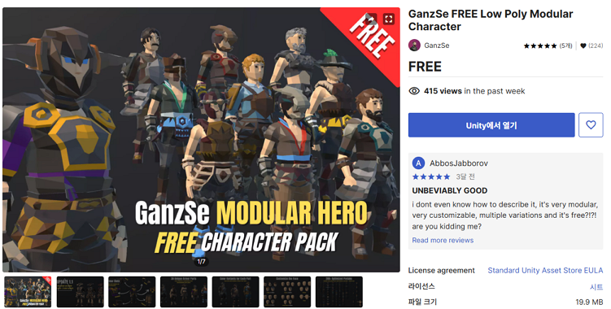
모델을 Prefab 폴더로 복사를 합니다. 모델이름은 MyCharacter입니다.
URP 렌더링에서 모델이 분홍색으로 보인다면 "Window / Rendering / Render Pipeline
Converter"로 메트리얼을 변경합니다.
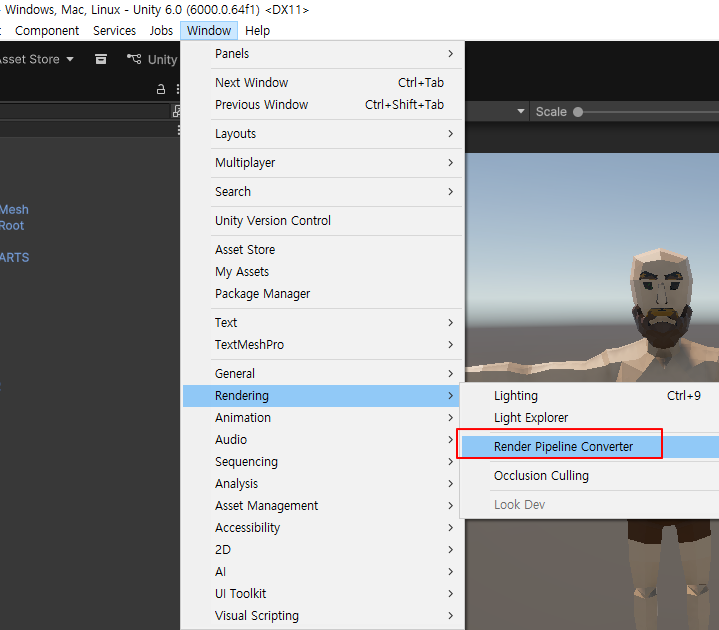
Render Pipeline Converter 팝업을 띄웁니다.
1. Material Upgrade 체크
2. Initialize And Convert 버튼 클릭
3. Convert Assets 버튼 클릭
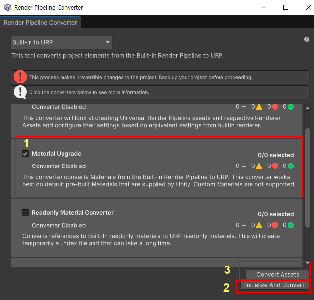
모델을 가져오면 이렇게 보입니다.
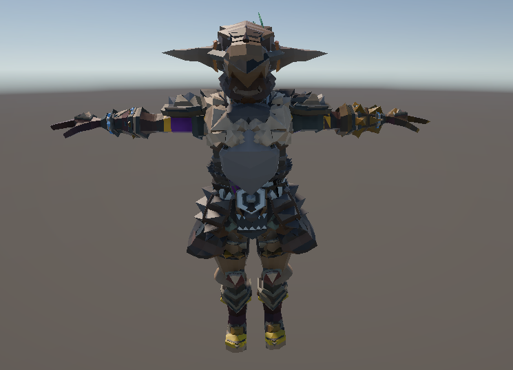
2. 프리팹 파츠 만들기
너무 많이 붙어 있어서 어떻게 해야 할지 난감합니다.
장비착용을 위해서 기본 복장으로 만들어 보겠습니다.
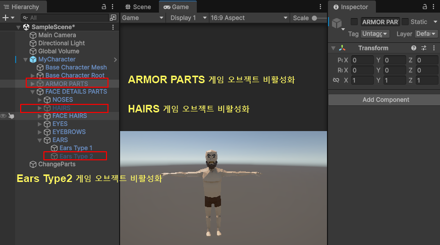
Ears Type1의 Mesh를 인스펙트 뷰에서 None으로 지정합니다.
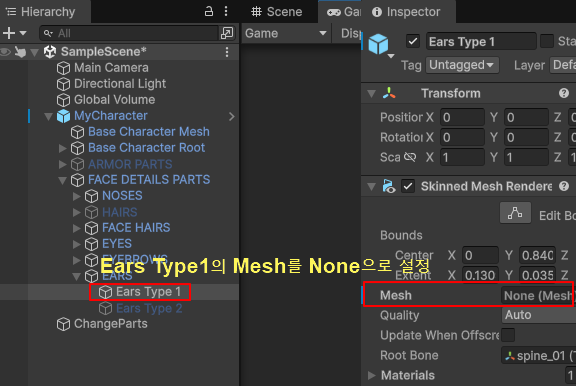
prefab 폴더를 만들고 착용하고 싶은 파츠를 Project/Assets/prefab 폴더로 드래그 합니다.
저는 "Chest Armor Type 2 Color1", "Chest Armor Type 5 Color3"를 Upper 파츠를
드래그 했습니다.
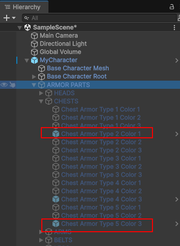
"Ears Type2" 게임 오브젝트의 인스펙트뷰에서 Mesh의 Ears Type2를 클릭하면 프로젝트창에서 해당 메시가 있는
위치로 이동 합니다.
메시 "Ears Typ1", "Ears Type2"를 prefab으로 복사합니다.
2종류의 Chest와 2종류의 귀 파츠를 준비했습니다.
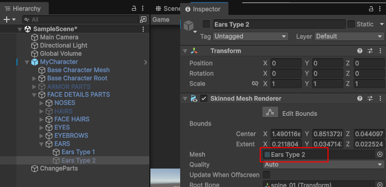
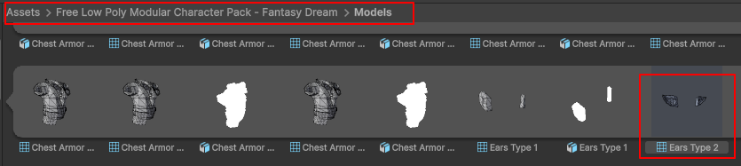
몇개 필요 없는 파일도 있는데, 프리팹에 만들어진 파일들입니다.
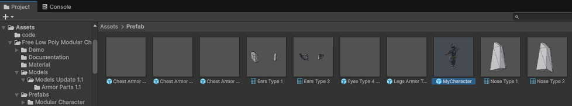
CharacterCustomizer.cs 파일
using System.Collections.Generic;
using UnityEngine;
public enum PartType
{
Upper,
Pants,
Gloves,
Shoes,
Ear
}
public class CharacterCustomizer : MonoBehaviour
{
[SerializeField] SkinnedMeshRenderer
baseMeshRenderer;
[SerializeField] SkinnedMeshRenderer earMeshRenderer;
private Dictionary<PartType,
SkinnedMeshRenderer> equippedParts = new();
[SerializeField] SkinnedMeshRenderer upper1;
[SerializeField] SkinnedMeshRenderer upper2;
[SerializeField] Mesh ear1;
[SerializeField] Mesh ear2;
public void EquipMesh(PartType type, Mesh partPrefab)
{
earMeshRenderer.sharedMesh =
partPrefab;
}
public void EquipPart(PartType type,
SkinnedMeshRenderer partPrefab)
{
// 기존 파츠 제거
if
(equippedParts.ContainsKey(type))
{
Destroy(equippedParts[type].gameObject);
}
// 새 파츠 생성
var newPart =
Instantiate(partPrefab, transform);
newPart.rootBone =
baseMeshRenderer.rootBone;
newPart.bones =
baseMeshRenderer.bones;
equippedParts[type] =
newPart;
}
void Update()
{
if
(Input.GetKeyDown(KeyCode.Alpha1))
{
EquipPart(PartType.Upper, upper1);
}
if
(Input.GetKeyDown(KeyCode.Alpha2))
{
EquipPart(PartType.Upper, upper2);
}
if
(Input.GetKeyDown(KeyCode.Alpha3))
{
EquipMesh(PartType.Ear, ear1);
}
if
(Input.GetKeyDown(KeyCode.Alpha4))
{
EquipMesh(PartType.Ear, ear2);
}
}
}
이 코드에서 실제 일어나는 일은 다음과 같습니다.
var newPart =
Instantiate(partPrefab, transform)
- partPrefab.gameObject를 복제
- 그 안에 있는 모든 컴포넌트 복사
- Transform
- SkinnedMeshRenderer
- Material
- 기타 스크립트들
정확히는 partPrefab이 붙어 있는
GameObject를 통째로 생성하고
반환값은 그 GameObject의
SkinnedMeshRenderer 컴포넌트입니다.
그래서 Destroy시 컴포넌트를 삭제하는것이 아니고 게임오브젝트를 삭제하는 것입니다.
Destroy(equippedParts[type].gameObject);
명시적으로 게임오브젝트를 생성하고 싶다면 다음과 같이 합니다.
var newGO = Instantiate(partPrefab.gameObject, transform);
var newPart = newGO.GetComponent<SkinnedMeshRenderer>();
빈 게임오브젝트(여기서는 이름을 ChangeParts)를 만들고 CharacterCustomizer.cs 파일을 컴포넌트로 추가
합니다.
EquipPart는 입을수 있는 상의, 하의를 착용할수 있는 함수입니다.
EquipMesh는 귀처럼 메시를 붙일수 있는 함수입니다. 지금은 코드를 간단하게 유지하기 위해 귀만 해보겠습니다.
CharacterCustomizer의 필드를 채워 줍니다.
baseMeshRenderer는 상의나 하의를 착용할 루트라고 보시면 됩니다.
earMeshRenderer는 귀의 메시를 어태치 할 루트라고 보시면 됩니다.
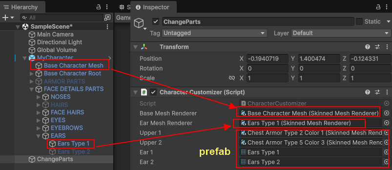
1, 2키를 누르면 상의를 바꿔 입습니다.
3, 4키를 누르면 귀를 변경 합니다.
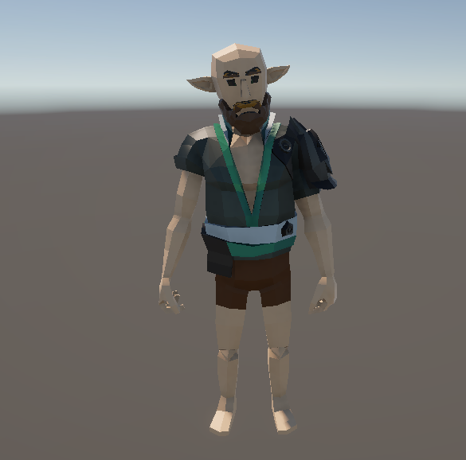
참조)
코드 보기 쉬움
https://forum.gamer.com.tw/C.php?bsn=60602&snA=2711
전체 코드 있음 (노드별로 순회해서 구조를 맞추고 있음)
https://github.com/sniffle6/Scriptable-Object-Inventory
https://www.youtube.com/watch?v=RESuTNMdqqQ
헤어 교체
https://www.youtube.com/watch?v=yK0ojJSoHds
예제에 사용한 모델( GanzSe FREE Low Poly Modular Character )
https://assetstore.unity.com/packages/3d/characters/humanoids/fantasy/ganzse-free-low-poly-modular-character-321521
|